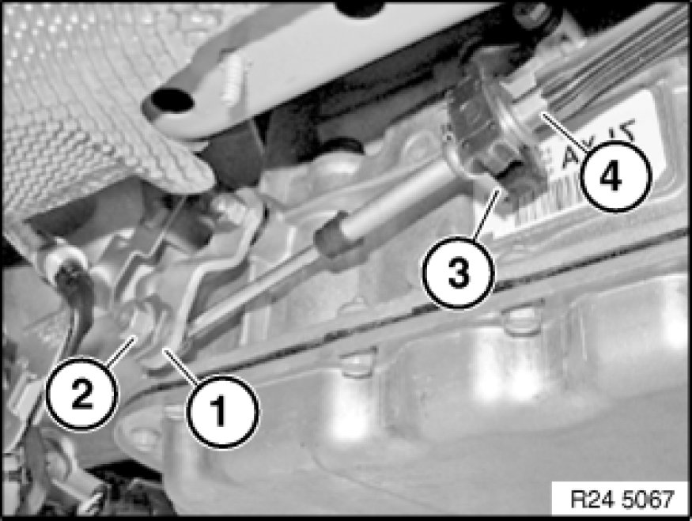
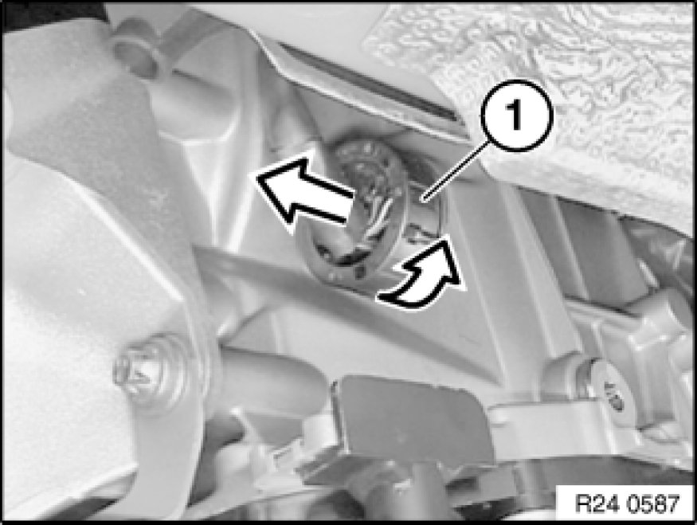
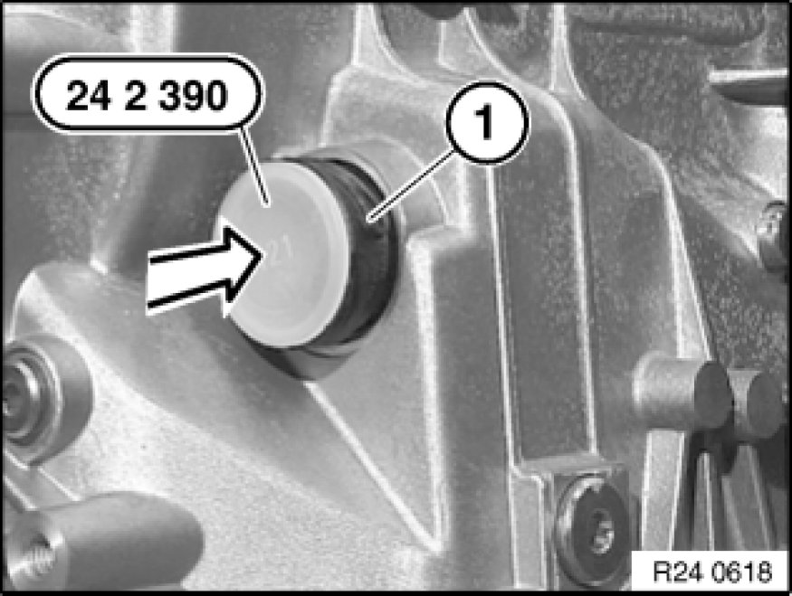
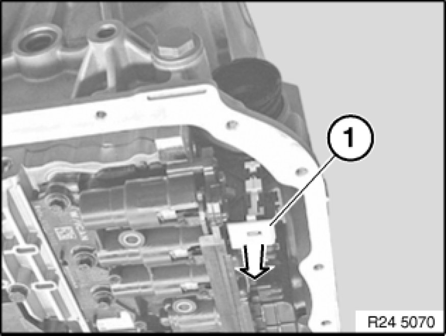
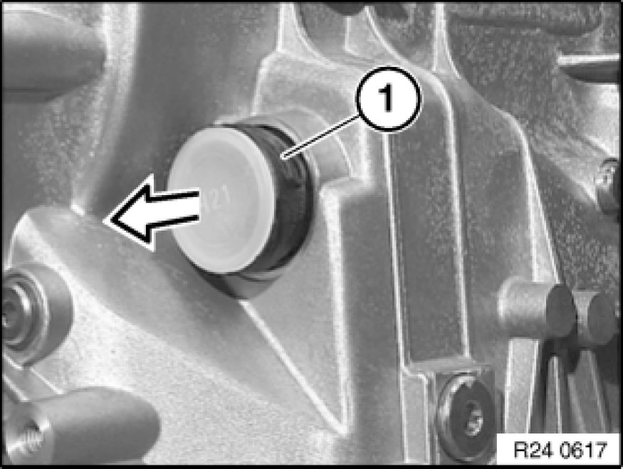
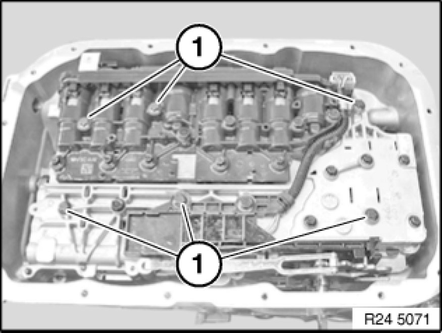
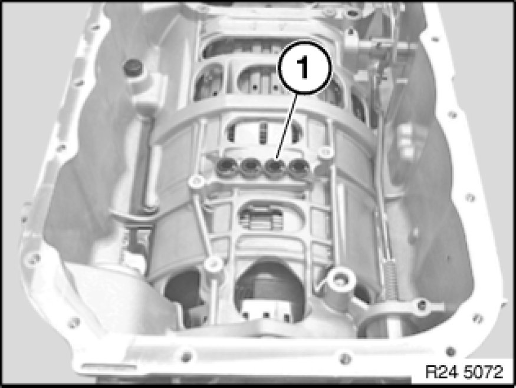
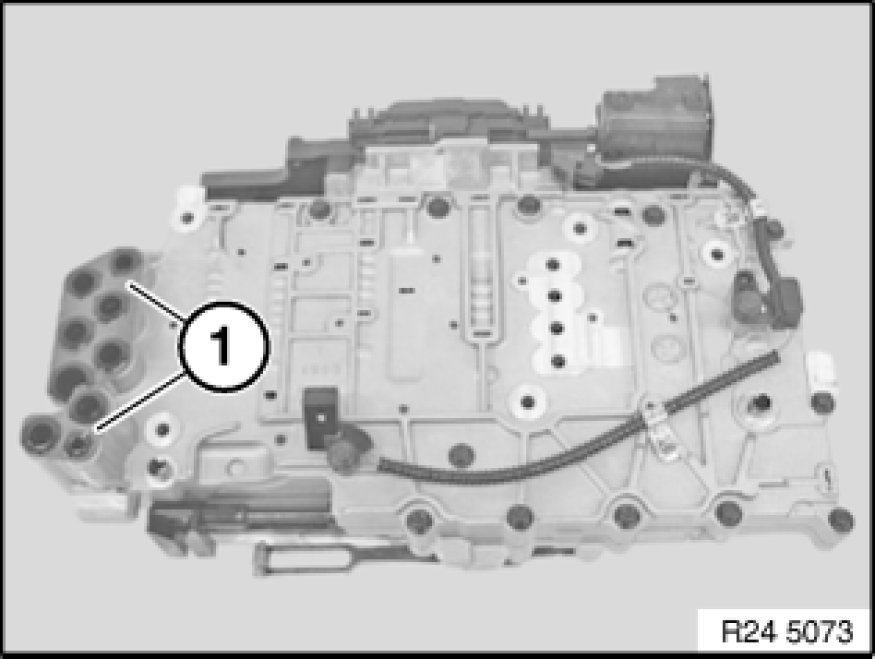
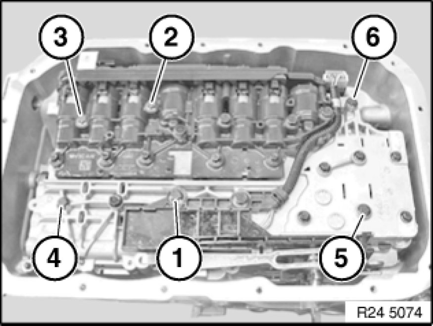

Removal and Replacement
24 34 563 - Replacing mechatronics (GA6L45R)

Special tools required:
- 24 2 390 24 2 390 Covering Cap
- 24 4 350 24 4 350 Socket, Torx Special Profile Section

Note:
After completing work:
- Load specific data version with DIS.

Important!
After completion of work, check transmission oil level Procedures.
Use only approved transmission fluid.
Failure to comply with this requirement will result in serious damage to the automatic transmission!

Important!
Read and comply with notes on protection against electrostatic discharge (ESD protection) 61 35 ... Notes on ESD Protection (Electro Static Discharge).

Necessary preliminary tasks:
- Remove heat shields.
- Support automatic transmission with hydraulic lifter.
- Remove transmission cross-member Replacing Cross-Member for Transmission Mounting.

Grip clamping sleeve (1).
Loosen nut (2).
Detach retainer (3) towards bottom using a screwdriver.
Pull cable (4) out of holder.
Installation:
Adjust selector lever.

Important!
Mechatronics can be destroyed by static discharges. Therefore the contacts inside the plug must not be touched. Insert special tool immediately after work step.
Unscrew plug (1) and disconnect.

Insert special tool 24 2 390 24 2 390 Covering Cap in sealing sleeve (1).
Remove transmission oil sump Service and Repair.

Unlock sealing sleeve with slide (1).

Note position of sealing sleeve.
Pull out sealing sleeve (1).
Installation:
Screw in sealing sleeve partially (lug in upper area). Turn until lug engages in groove of transmission. Slide in sealing sleeve.
Lug on sealing sleeve must not be damaged!

Release all bolts (1) with special tool 24 4 350 24 4 350 Socket, Torx Special Profile Section.
Remove mechatronics.

Installation:
Replace gasket (1).
Coat new seals with automatic transmission fluid and install.

Installation:
Replace gaskets (1).
Coat new seals with automatic transmission fluid and install.

Important!
Tighten down bolts in sequence (1 to 6).
Failure to comply with this requirement will result in serious damage to the automatic transmission!
Tightening torque 24 30 1AZ Hydraulic/Electric Control Parts and Controlling Elements.